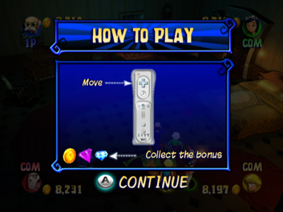

10 |
Het spel spelen |
 |
Kies een personage en ga het huis binnen. Daar staat je een groot aantal minispellen, uitdagingen op het bord en speciale gebeurtenissen te wachten. Je activeert ze als je een bepaald vakje passeert of erop terechtkomt. Op deze manier kom je steeds dichter bij het wachtwoord voor de verborgen schat! Het scherm Difficulty (spelniveau) In dit scherm bepaal je op welk niveau je wilt spelen. Er zijn drie niveaus: Easy (makkelijk), Normal (normaal) en Hard (moeilijk). Op de hogere niveaus zijn de raadsels moeilijker op te lossen, waardoor je het wachtwoord minder eenvoudig vindt. Denk er ook aan dat de minispellen steeds lastiger worden naarmate je verder komt in het speltype Adventure (avontuur). De schermen Select Character (personage kiezen) en Choose Number of Human Players (aantal menselijke spelers kiezen) In dit scherm bepaal je als welke van de vier personages je wilt spelen en hoeveel menselijke spelers meedoen. Druk op de B-knop om je personage keuze te annuleren. Je bereikt het scherm Choose Number of Human Players (aantal menselijke spelers kiezen) via het scherm Select Character (personage kiezen). Je kunt kiezen uit vier instellingen: 1 Human Player and 3 COMs (1 menselijke speler en 3 computergestuurde spelers) 2 Human Players and 2 COMs (2 menselijke spelers en 2 computergestuurde spelers) 3 Human Players and 1 COM (3 menselijke spelers en 1 computergestuurde speler) 4 Human Players (4 menselijke spelers) Meedoen met een spel dat al bezig is Een menselijke speler kan altijd de besturing overnemen van de computer. De nieuwe speler moet eerst de Wii-afstandsbediening verbinden met het Wii-systeem (als dat niet al is gebeurd). De nieuwe speler vervangt de computergestuurde speler die overeenkomt met het spelerslampje van zijn/haar Wii-afstandsbediening. Bijvoorbeeld: de Wii-afstandsbediening met spelerslampje 3 vervangt computergestuurde speler 3. De nieuwe speler gaat verder met de hoeveelheid geld die de computergestuurde speler tot dat moment heeft verzameld. Zodra een nieuwe speler meespeelt, kan hij/zij niet meer worden vervangen door een computergestuurde speler. Uitleg over uitdagingen op het bord  Voorafgaand aan elke uitdaging op het bord zie je een scherm waarin wordt uitgelegd hoe je het moet spelen. Minispellen vrijspelen Niet alle minispellen zijn direct beschikbaar in het speltype Mini-Games (minispellen). In de loop van het speltype Adventure (avontuur) speel je echter steeds meer minispellen vrij. |
 |
 |
 |